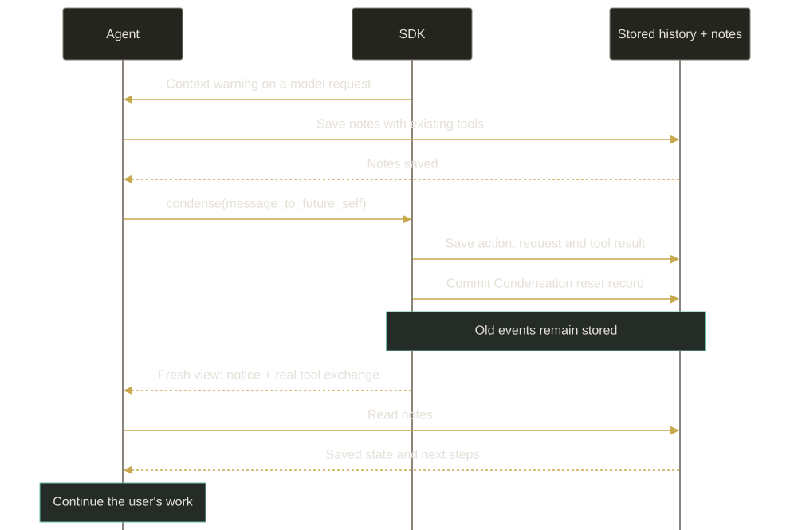
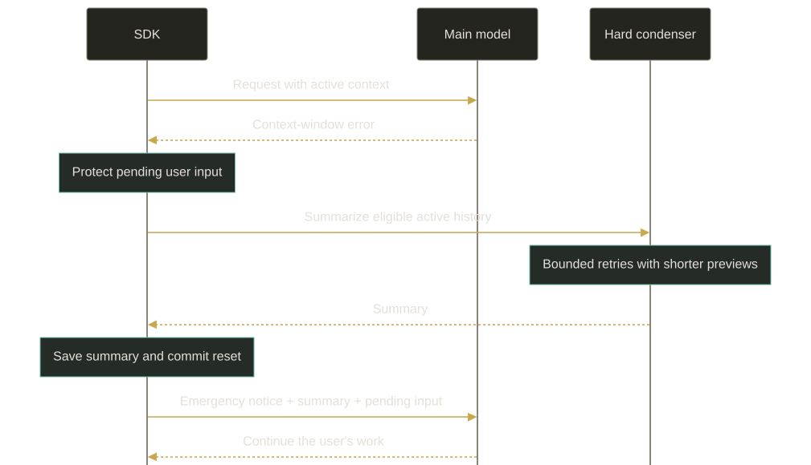

How SmolPaws resets its context
The agent chooses when to start with a fresh context. SmolPaws warns it as the context fills, then lets it save notes and call condense. A separate summarizer handles emergencies when the model provider refuses an oversized request.
The agent prepares its own return
An LLM can only receive a limited amount of context in each request. In agent_reset mode, the agent decides what to save before removing earlier conversation history from that context.
It writes notes with its existing tools, waits for those writes to succeed, then calls condense. The tool can carry a message to its future self. This path makes no summarizer call: the agent chooses the handoff itself.
condense({
message_to_future_self:
"Read notes/release.md. Tests passed; next, review the diff."
})The message is optional, preserved verbatim and limited to 16,384 UTF-16 code units. The tool neither writes notes nor checks that they are complete. It must be the only tool call in that response, so a reset cannot split a batch of actions.

The conversation keeps its identity, files, saved notes and usage accounting. Only the active history sent to the model changes. Old messages remain available in the event log.
What the agent sees after a reset
The next request still includes the normal system prompt, configured memory snapshot, runtime information, skills and tool definitions. Its conversation history then starts in this order:
- User role
“The agent triggered context condensation.” This message comes from the environment, not the human.
- Assistant
The agent's actual
condensecall, with its original arguments and tool-call ID. - Tool result
The matching result, with recovery instructions and the optional message from its past self.
- Pending input
Genuine user messages that arrived after the request which produced the tool call, kept in order.
There is no generated summary or retained prefix of the old history. The tool result tells the agent to take a deep breath, read its notes and continue the user's work. It also reminds the agent that the user may not know a reset happened.
Saved notes need to be read again. SmolPaws keeps a fixed memory snapshot for the conversation; resetting context does not automatically refresh that snapshot from files.
A message received while the agent is resetting remains pending until a later model request consumes it. It must not disappear with the history that the agent chose to clear.
Warnings leave the decision with the agent
The default warning levels are 75%, 80%, 85% and 90% of the main model's input budget. If its active LLM profile sets maxInputTokens, that value defines the budget. Otherwise, the SDK uses resolved model metadata when available.
After a successful model request, the SDK uses the provider's input-token count for the next warning check. That count includes cached input. It excludes output tokens, cumulative usage and calls to other profiles.
This measurement is one successful request behind. Before the first success in a reset cycle, the SDK estimates the input from the assembled prompt and tool definitions. If it cannot establish usage or a budget, it does not invent a percentage.
| Warning level | Input tokens |
|---|---|
| 75% | 300,000 |
| 80% | 320,000 |
| 85% | 340,000 |
| 90% | 360,000 |
Each stage is delivered once per reset cycle. A jump from 74% to 87% produces one 85% warning. A failed model request leaves its warning pending; a successful request consumes it. A committed reset rearms the stages.
Warnings are advisory. Neither a high estimate, an event count nor ignored warnings trigger an automatic reset. The agent can call condense earlier, or continue working after a warning.
Emergency recovery uses a separate condenser
If the main provider returns a recognized context-window error, the SDK can invoke a configured hard_condenser. This is the emergency path. It is independent of the warning levels and does not wait for an agent-authored tool call.
The hard condenser uses its own LLM profile to summarize the eligible active history. Pending user input is protected separately. On success, the SDK replaces that history with an environment notice followed by a CondensationSummaryEvent, rendered as a user-role message.

The emergency notice begins:
“The environment triggered emergency context condensation after the model provider returned a context-window error.”
That notice belongs only to a committed emergency recovery. An ordinary agent reset uses the shorter notice shown above. The emergency path has no condense tool exchange, because the agent did not call the tool.
Hard condensation summarizes the whole eligible view at offset zero. It does not preserve a keep_first prefix or a recent-history tail. “Whole view” describes the selected events: the summarizer receives event previews, which can omit detail.
Summary attempts are bounded. The defaults allow 5 attempts and shorten event previews by a factor of 0.8 on retries. If the fallback is missing or fails, the run stops with a recoverable error and retains its source history.
Why recovery cannot keep looping
Another automatic hard reset is blocked until a later main-model response completes successfully. New input or a server restart does not lift that block. This prevents repeated paid summary calls when recovery cannot make the request fit.
Authentication failures, rate limits, transport errors and malformed message history do not select this path. Dropping conversation history also cannot fix an oversized system prompt or tool set.
Configure the reset and its fallback separately
The agent-reset condenser needs warning thresholds. The hard condenser needs a saved LLM profile of its own. A profile's presence in the catalog does not enable emergency recovery.
{
"llm_profile_ref": "main",
"condenser": {
"condenser_kind": "agent_reset",
"warning_thresholds": [0.75, 0.80, 0.85, 0.90]
},
"hard_condenser": {
"condenser_kind": "llm_summarizing",
"llm_profile_ref": "summary",
"hard_context_reset_max_retries": 5,
"hard_context_reset_context_scaling": 0.8
}
}Agent settings excerpt: merge these fields into existing agent_settings rather than replacing unrelated options. The names main and summary stand for existing saved profiles. Set maxInputTokens on the main LLM profile to choose the warning budget; it does not impose a provider request limit.
Omitting hard_condenser or setting it to null leaves agent reset available but disables automatic summary recovery. After a provider overflow, that configuration stops the run with an error.
In the server's state.json, these options live under settings.agent_settings, while saved profiles live under llmProfiles. The separate models.json selects profile names for roles and scopes.
The server saves resolved profile bindings with the conversation. Catalog edits alone do not refresh those captured profiles. The hard-condenser binding also survives main-profile changes.
The manual /condense route is not a shortcut into this mode. For an agent-reset conversation, the server returns 409 agent_controlled_condensation. Ask the agent to save its notes and use its tool instead. Existing summarizing condensers keep their own manual-command behavior.
The event log records what actually happened
The tool uses typed CondenseAction and CondenseObservation payloads inside the existing ActionEvent and ObservationEvent envelopes. There are no separate top-level action or observation event kinds for this tool.
A CondensationRequest records intent and the input boundary. The durable Condensation record commits the reset. The SDK validates their references before rebuilding the active view from them.
On restore, the SDK reconstructs that view from the stored records. It does not run the tool again or erase the original log. The voluntary view retains the genuine tool exchange; emergency recovery retains a generated summary and its different notice.
This is a deliberate SmolPaws extension to the Python OpenHands SDK. The emergency summarization algorithm comes from Python's hard_context_reset(). The agent-controlled tool, advisory warnings and recovery notices are defined in the TypeScript transpilation contract.
Sources and design history
This guide describes checked source behavior, not the live settings of any particular conversation. The September proposal records the original design discussion.
- SDK transpilation contract: the agent-reset policy and its relationship to Python.
- Condense tool, reset lifecycle and active-view projection.
- Warning stages, exact notice text and settings schemas.
- Agent Server transpilation rules and hard-condenser binding: profile resolution, stored bindings and host behavior.